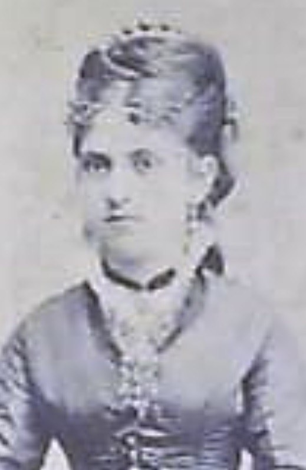

Árbol › Personas › Ana Antonia Naranjo Cabrera · ver en el árbol

Retrato depositado por Luisa Virginia Henríquez Guerra (luisitahg) en Geneanet.
Generación XII
Ana Antonia Naranjo Cabrera
n. Telde, 8 oct 1837
Una de las hermanas Naranjo Cabrera. Se casó con Juan Falcón de Llarena y tuvo al menos diez hijos, los Falcón Naranjo. Se conservan su retrato y uno del matrimonio.
Datos
| Nacimiento | 8 oct 1837 (Historia de los Naranjo, p. 161) |
|---|---|
| Padres | Adrián Naranjo y Cubas y Josefa Antonia Cabrera de Quintana y Padrón |
| Esposo | Juan Falcón de Llarena |
| Hijos | Pilar (1881-1912), Ana (1884-1940), Josefa Cristina (1885-1912), María del Pino (1888), Salvador (1890-1927), Carmelo (1891-1958), Consuelo (1892), Adán, Eva y Juan |
| Nota | El libro de Miguel Rodríguez Díaz de Quintana dice que murió soltera; el árbol de luisitahg y Geni la tienen casada, y lo confirma la foto del matrimonio. |
Documentos y hallazgos
Pulse en una imagen para verla a tamaño completo.
Retrato del matrimonio Falcón Naranjo, de estudio, hacia 1880.
Foto depositada por Luisa Virginia Henríquez Guerra (luisitahg) en Geneanet: «Matrimonio Falcon Naranjo».